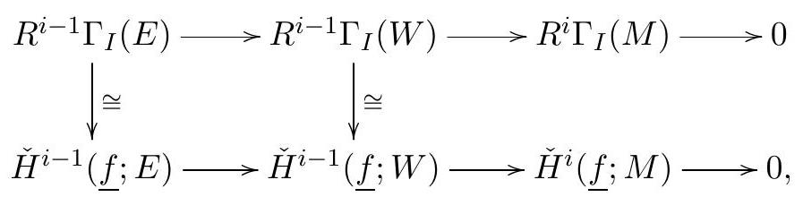

Recall that we defined \(\mathrm{H}_{I}^{i}(M):=R^{i} \Gamma_{I}(M)\text{.}\) Now, with the theory of injectives we have so far, we can prove some properties about these functors. But first we want to collect some other definitions of local cohomology. Some of our descriptions involve direct limits. We recall a couple of facts about direct limits.
its direct limit is the module \(M=\lim _{i \in \mathbb{N}} M_{i}\text{,}\) equipped with maps \(\iota_{i}: M_{i} \rightarrow M\) for all \(i\text{,}\) satisfying the property that, if there are maps \(\alpha_{i}: M_{i} \rightarrow N\) that commute with the maps in the system, then there is a unique map \(\varphi: M \rightarrow N\) such that \(\alpha_{i}=\varphi \circ \iota_{i}\) for all \(i\text{.}\)
This notion is functorial: given two directed systems of complexes, and maps of complexes for each \(i\) that commute with the maps in the systems, there is an induced map on the direct limits.
Direct limits can be realized explicitly as follows: every element is represented by a class \((m, i)\) with \(m \in M_{i}\text{.}\) Two classes \((m, i),(n, j)\) are the same if and only if for some \(k \geq \max \{i, j\}\text{,}\) the images of \(m\) and \(n\) under the composed transition maps agree in \(M_{k}\text{.}\) In particular, an element represents the zero class if and only if it is in the kernel of a large composition of the transition map.
Similar considerations hold for systems indexed by an arbitrary poset \(P\text{;}\) this consists of a collection of modules \(M_{p}\) for \(p \in P\text{,}\) and commuting maps \(M_{p} \rightarrow M_{q}\) for all \(p \leq q\text{.}\)
Remark19.2.
Remark 3.2. We defined the tensor product of complexes in terms of homological notation before. The same definition works with cohomological indexing.
Moreover, if \(\left\{I_{i}\right\}_{i}\) is a sequence of ideals such that for all \(a \in \mathbb{N}\) there exist \(b, c\) such that \(I_{b} \subseteq I^{a}\) and \(I^{c} \subseteq I_{a}\text{,}\) then
It is easy to see that these isomorphisms are functorial.
Figure19.5.image
Remark19.6.
Remark 3.5. Earlier, we saw that Koszul cohomology and \(\operatorname{Ext}^{\bullet}(R / I,-)\) measure similar things, and are equal when \(I=\left(f_{1}, \ldots, f_{m}\right)\text{,}\) is generated by a regular sequence. Since \(f_{1}^{t}, \ldots, f_{m}^{t}\) form an \(R\)-sequence as well in this case, we obtain isomorphisms
though we should take care that we have the right maps in the directed system.
In general, Koszul cohomology and \(\operatorname{Ext}^{\bullet}(R / I,-)\) are not the same; we have seen examples in the homework. However, we will soon see that they agree in the direct limit; the isomorphism above holds for all ideals in a noetherian ring!
Let \(M\) be an \(R\)-module and \(x \in R\text{.}\) To compute the limit of the system
\begin{equation*}
M \stackrel{x}{\longrightarrow} M \stackrel{x}{\longrightarrow} M \stackrel{x}{\longrightarrow} M \stackrel{x}{\longrightarrow} \cdots
\end{equation*}
we can replace \(M\) by \(M^{\prime}=M / \Gamma_{x} M\text{,}\) where \(\Gamma_{x} M\) are the elements killed by some composition of the maps \(M \stackrel{x}{\longrightarrow} M\text{.}\)
so the direct limit is \(M_{x}\text{.}\) Note that we have a commutative square
Figure19.7.image
so we can identify \(M^{\prime} \stackrel{x^{t}}{\longrightarrow} M^{\prime}\) with \(M^{\prime} \stackrel{1}{\longrightarrow} \frac{1}{x^{t}} M^{\prime}\text{.}\)
Now consider a directed system of (cohomological) Koszul complexes.
\begin{equation*}
K^{\bullet}(1 ; M) \longrightarrow K^{\bullet}(x ; M) \longrightarrow K^{\bullet}\left(x^{2} ; M\right) \longrightarrow K^{\bullet}\left(x^{3} ; M\right) \longrightarrow \cdots
\end{equation*}
that is,
The limit of this system of Koszul complexes is the Čech complex of \(x\) on \(M\) :
Given a sequence of elements \(f_{1}, \ldots, f_{t} \in R\text{,}\) the maps \(K^{\bullet}\left(f_{i}^{t} ; R\right) \longrightarrow K^{\bullet}\left(f_{i}^{t+1} ; R\right)\) given by 1 on \(K^{0}, f_{i}\) on \(K^{1}\text{,}\) induce maps
(3) This is easy to see, since the Cech complex is compatible with the direct sum decomposition.
(4) Follows from the same property noted for Koszul complexes.
Theorem19.13.
Theorem 3.9 (Fundamental Theorem of Local Cohomology). Let \(R\) be a noetherian ring and \(I=\left(f_{1}, \ldots, f_{t}\right)\) an ideal. Then, for all \(R\)-modules \(M\text{,}\)
These isomorphisms are functorial in \(M\) and extend to isomorphisms of long exact sequences given a short exact sequence
\begin{equation*}
0 \longrightarrow A \longrightarrow B \longrightarrow C \longrightarrow 0 \text {. }
\end{equation*}
Proof.
We have seen that \(\Gamma_{I}(M) \cong \underset{n}{\lim _{n}} \operatorname{Ext}_{R}^{i}\left(R / I^{n}, M\right)\) and \(\check{H}^{i}(\underline{f} ; M) \cong \underset{n}{\lim _{n}} \mathrm{H}^{i}\left(f_{1}^{n}, \ldots, f_{t}^{n} ; M\right)\text{.}\) To show that \(R^{i} \Gamma_{I}(M) \cong \check{H}^{i}(f ; M)\text{,}\) we proceed in the following steps:
Step 1: Show \(\Gamma_{I}(M)\) and \(\check{H}^{0}(\underline{f} ; M)\) are canonically isomorphic.
Step 2: Show that \(\check{H}^{>0}(\underline{f} ; E)=0\) for any injective module \(E\text{.}\)
Step 3: Use the previous steps to conclude the proof.
Proof of Step 1:
\begin{equation*}
\begin{aligned}
\check{H}^{0}(\underline{f} ; M) & =\mathrm{H}^{0}\left(0 \rightarrow M \rightarrow \oplus_{i} M_{f_{i}}\right) \\
& =\left\{m \in M \mid\left[\frac{m}{1}\right]=0 \text { in } M_{f_{i}} \text { for all } i\right\} \\
& =\left\{m \in M \mid f_{i}^{\gg 0} \cdot m=0 \text { for all } i\right\} \\
& =\Gamma_{I}(M) .
\end{aligned}
\end{equation*}
We note that the last equality uses finite generation of \(I\) in a crucial way; only the containment " \(\supseteq\) " holds in general without this.
Proof of Step 2: By the structure theorem for injectives over noetherian rings, \(E \cong \oplus E_{\lambda}\text{,}\) where
\begin{equation*}
E_{\lambda}=E_{R}(R / P) \cong E_{R_{P}}\left(R_{P} / P R_{P}\right)
\end{equation*}
By the direct sum property, we may replace \(E\) by \(E_{R}(R / P)\text{.}\) By the invariance of base property, we may replace \(R\) by \(R_{P}\text{.}\) Now, \(E\) is an injective hull of the residue field, so it is artinian, and we write \(E=\lim _{\longrightarrow} E_{t}\) where the \(E_{t}\) are modules of finite length. It suffices to show that the vanishing holds for modules of finite length.
We claim that if the desired vanishing holds for \(M=K\text{,}\) then it holds for all modules of finite length (which would complete Step 2). We induce on the length of \(L\text{.}\) If \(1<\ell(M)<\infty\text{,}\) then write \(0 \rightarrow L \rightarrow M \rightarrow K \rightarrow 0\text{,}\) with \(\ell(L)<\ell(M)\text{.}\) The long exact sequence gives
Applying the invariance of base property again, we may assume without loss of generality that \(R=K\text{.}\)
There are multiple ways to deal with this case. We note that if \(f_{i}=0\text{,}\) then \(\check{C}^{\bullet}\left(f_{i} ; K\right)=(0 \rightarrow K \rightarrow 0)\text{,}\) and if \(f_{i} \neq 0\text{,}\) then \(\check{C}^{\bullet}\left(f_{i} ; K\right)=(0 \rightarrow K \stackrel{1}{\longrightarrow} K \rightarrow 0)\text{.}\) It is then an easy exercise, which we leave to you, to show that \(\check{H}^{i}(f ; K)=K\) for \(i=0\) and 0 for \(i>0\) if all \(f_{i}\) ’s are zero, and that \(\check{H}^{i}(\underline{f} ; K)=0\) for all \(i\) otherwise.
Of course, this step relied crucially on the structure theorem for injectives over noetherian rings.
Proof of Step 3: This follows in complete generality from the previous steps.
We proceed by induction on \(i\text{,}\) with the base case being Step 1 . Now, let \(i>0\text{.}\)
We assume that we have a canonical isomorphism between \(H_{I}^{j}(M)\) and \(\check{H}^{j}(\underline{f} ; M)\) for all \(M\) and all \(j<i\text{.}\) Embed \(M\) into an injective \(E\) to get a short exact sequence
\begin{equation*}
0 \rightarrow M \rightarrow E \rightarrow W \rightarrow 0
\end{equation*}
Then, there is a commutative diagram

Figure19.14.image
where bottom zero on the right comes from Step 2. This induces an isomorphism \(H_{I}^{i}(M) \cong \check{H}^{i}(f ; M)\text{.}\) We omit the verification that this isomorphism does not depend on the choice of embedding into an injective, and that these isomorphisms are compatible with the connecting maps of long exact sequences.
of local cohomology all have different advantages for attacking problems.
The descriptions (1) and (1’) are computed from injective resolutions, as opposed to (2) and \((2\) ’), which are computed from generators. We might think of the former as being more natural, and the latter as being more flexible.
We note that the descriptions (1) and (2) are made entirely from "big" modules that are somehow nice, whereas the descriptions (1’) and (2’) realize local cohomology as limits of finitely generated modules (if \(M\) is). Some natural questions to ask already are whether we can realize the limits in (1’) and (2’) as filtered limits / unions, and whether the resulting limits are determined in some sense by finite stages in the limit system. We will see a few results of this form, but it’s worth noting that questions of this form are an active topic of research.


.jpg)